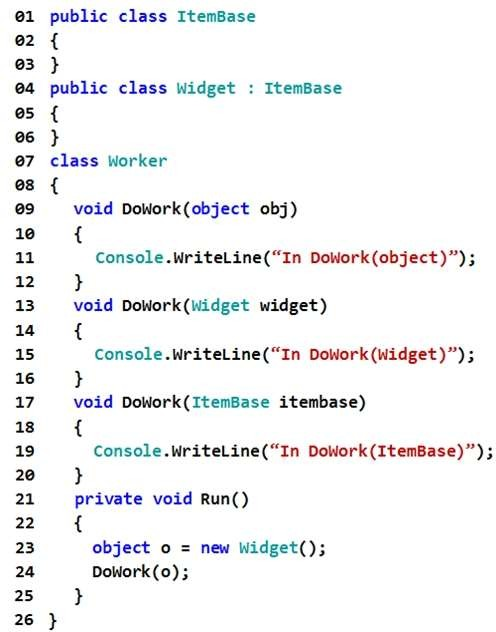
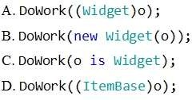

You need to ensure that the DoWork(Widget widget) method runs. With which code segment should you replace line 24?

A. Option A
B. Option B
C. Option C
D. Option D
Correct Answer: A
Section: Volume B
Explanation
Explanation/Reference:
Explicación
La opción B da error ya que en el código dado no tiene constructor por eso la opción B no se puede compilar.
- La representación visual del codigo del ejercicio se muestra en la siguiente imagen:

Tal y como se muestra en el código dado en este ejercicio se han desarrollado cada una de las opciones y sus correspondientes resultados.
Mostrando de manera visual la respuesta: